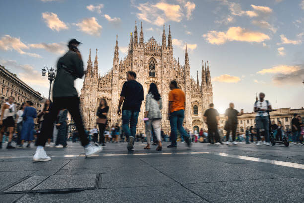
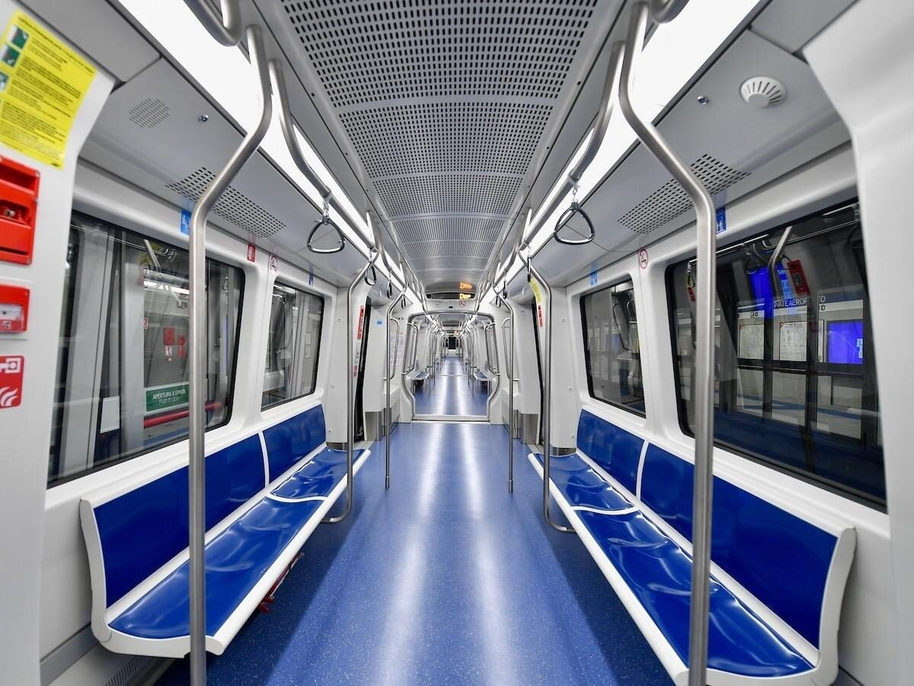

MILAN EXPLORER
MILAN EXPLORER
Milan Safety Tips: Staying Secure

Beware of Pickpockets ('Borseggiatori')
This is the most common issue tourists face, especially in crowded areas. Pickpockets often work in teams and use distraction techniques.
High-Risk Areas: Duomo Square & Galleria, Metro (especially lines M1, M2, M3 during boarding), Central Station (Stazione Centrale), busy shopping streets, and trams (especially historic ones popular with tourists).
Prevention: Keep valuables in front pockets or secure inner pockets. Use bags with zippers that close securely and carry them in front of you. Avoid displaying expensive jewellery or large amounts of cash. Be extra vigilant when people bump into you or try to distract you.
General Awareness & Valuables
Maintain awareness of your surroundings, especially when using your phone or looking at maps. Avoid leaving bags unattended or hanging on the back of chairs in cafes/restaurants.
Only carry the cash you need for the day. Use ATMs inside banks during opening hours if possible, rather than isolated ones on the street late at night. Be discreet when handling money.
Be cautious of unsolicited 'help' with luggage or aggressive street vendors – sometimes these are distractions for pickpocketing.

Public Transport Safety
As mentioned, the Metro and trams are prime spots for pickpockets due to crowding.
Have your ticket or contactless payment ready before entering the station or boarding to avoid fumbling with your wallet. Secure your belongings before the doors open. Be especially alert during the rush to get on and off, as this is when pickpockets often strike.
If possible, avoid overly packed carriages and move away from the doors once onboard if you feel uncomfortable.
Night Safety & Emergencies
Milan is generally safe at night, but it's always wise to stick to well-lit, populated streets, especially if alone. Avoid walking through dark parks or poorly lit alleyways late at night.
Know how you'll get back to your accommodation, use reputable taxis (look for official city markings) or ride-sharing apps if needed.
Emergency Number: The single European emergency number is 112. This number can be called free from any phone to reach police (Polizia), ambulance (ambulanza) or fire brigade (Vigili del Fuoco).